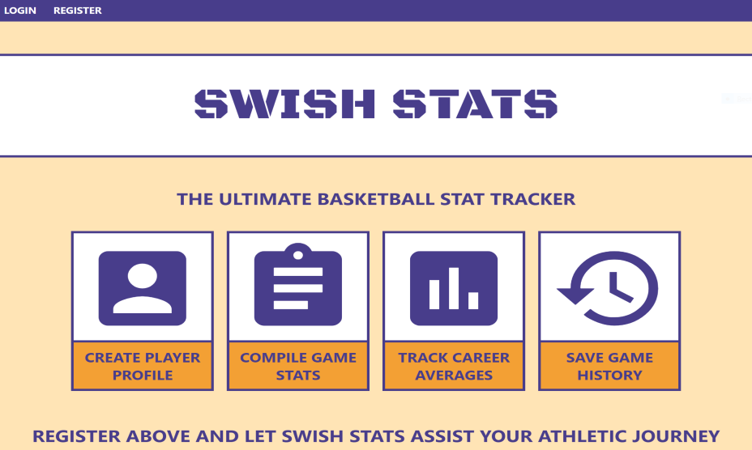
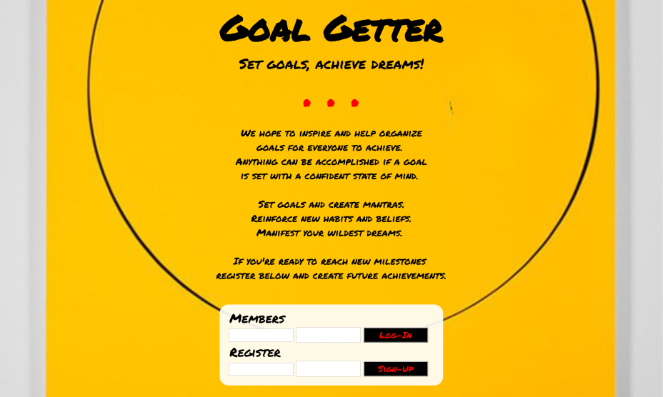
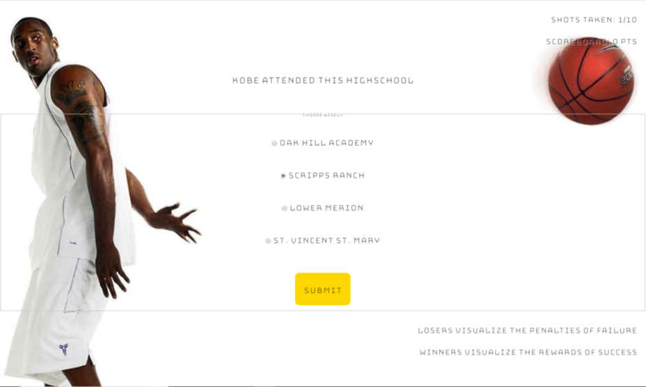

Jared Juan
WEB DEVELOPER
ABOUT ME
The name is Juan, Jared Juan. I am a graduate of the Full Stack Bootcamp at Thinkful. With coding I enjoy the challenge of solving problems and I love seeing project ideas come to fruition on the screen. I am very active and social. In my free time I enjoy being outdoors and getting sand under my feet. I love to travel, learning about new cultures and their eats make me all giddy inside. Most of all, I love basketball and I can escape into a court induced euphoria with a ball in my hand. I believe life is lived to learn and become your best self. Thus I enjoy the process of this principle everyday.
PROJECTS
Swish Stats
HTML - CSS - JavaScript - jQuery - Express - Node.js - React - Redux - Mocha - Chai - Mongo - Mongoose
The ultimate basketball stat tracker. Register and create a player profile, create a stat sheet to track game stats in real time. Track your stats, find your efficiencies and inefficiencies to figure out how to improve.
Goal Getter
HTML - CSS - JavaScript - jQuery - Express - Node.js - Mocha - Chai - Mongo - Mongoose
Create and keep track of all your goals in one place. Create a mantra for each goal to reinforce confidence as you tackle your goal. Set goals, achieve dreams!
ON/STAGE
HTML - CSS - JavaScript - jQuery - Bandsintown API
Search for an artist or band to see what acts are going on stage near you.
Kobe Quiz
HTML - CSS - JavaScript - jQuery
Test your mental knowledge about all things Kobe Bryant and determine if you're a Kobe stan with this 10 question Kobe Bryant Quiz.